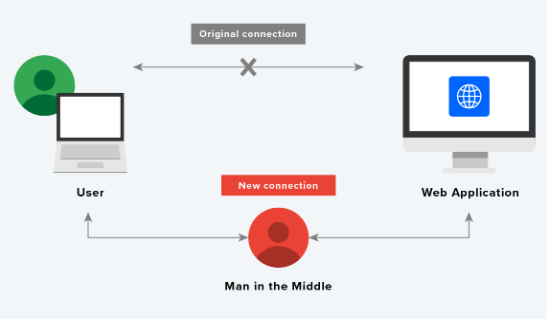
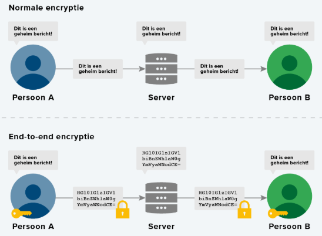

Onze digitale veiligheid wordt op allerlei manieren bedreigd. Aanvallers maken gebruik van verschillende zwakheden om toegang te krijgen tot onze digitale gegevens. In dit hoofdstuk kijken we naar de volgende zwakheden:
- Zwakheden in de architectuur
- Zwakheden in communicatie
- Zwakheden bij gebruikers
Zoals je al weet, bestaan producten uit de volgende drie lagen (het Drielagenmodel):
- Fysieke laag
- Logische laag
- Toepassingenlaag
Een zwakheid in de architectuur maakt gebruik van een tekortkoming in een van deze lagen, of in de communicatie tussen twee lagen. Er is dan een fout gemaakt in het ontwerp van deze laag of de communicatie. Vaak had de ontwerper of maker die fout helemaal niet voorzien.
Een voorbeeld is de camera op je telefoon. Wanneer een app gebruik wil maken van je camera, verschijnt er eerst een pop-up waarin je toestemming (Cookies) moet geven. Het kan gebeuren dat er een manier wordt gevonden om de camera te gebruiken zonder dat de pop-up verschijnt. Een aanvaller kan dan meekijken met je camera zonder dat je dat doorhebt.
Een ander voorbeeld is de vraagtaal SQL. Een app of website kan gegevens ophalen uit een database en deze weergeven. Stel dat het lukt om de vraag vanuit de app naar de database aan te passen. Dan is het ineens mogelijk om andere gegevens uit de database te selecteren dan die oorspronkelijk worden gevraagd. En het is in theorie zelfs mogelijk om nieuwe gegevens toe te voegen, bestaande gegevens aan te passen en zelfs te verwijderen. Deze techniek wordt een SQL-injectie genoemd. Het is een vorm van hacken waardoor gegevens in een slecht beveiligde databaseverbinding kunnen worden aangepast.
Als je een app of programma maakt dat een database gebruikt, moet je altijd zorgen dat deze verbinding goed beveiligd is en dat je input van gebruikers altijd filtert. Zwakheden in de architectuur kun je verhelpen door ze zelf op te sporen en op te lossen, voordat iemand met kwade bedoelingen ze heeft gevonden. Dat doe je door de architectuur te testen. Je gaat dan zelf proberen om de architectuur aan te vallen.
Verschillende apparaten zijn met elkaar verbonden. Bijvoorbeeld door het internet, waardoor ze met elkaar communiceren. Maar die communicatie moet wel op een veilige manier gebeuren. Als jij op je telefoon een wachtwoord intypt op een website, wordt dit wachtwoord verzonden vanaf je telefoon naar de website. Het ingevoerde wachtwoord mag voor niemand zichtbaar zijn, behalve voor de website waarop je inlogt.
Man-in-the-Middle aanval
Met een man-in-the-middle aanval kan de verbinding tussen twee apparaten afgeluisterd worden. Stel dat een gebruiker gegevens invult op een website. Die gegevens worden direct naar de website verzonden. Maar als er iemand tussen deze verbinding komt, en de binnenkomende gegevens van de gebruiker direct doorstuurt naar de website, heb je niet door dat je afgeluisterd wordt. Deze techniek werd vroeger nogal eens gebruikt door een openbaar wifi-netwerk op te zetten. Nietsvermoedende gebruikers verbinden hiermee en maken gebruik van het internet. Maar ondertussen loopt al het internetverkeer via de hotspot van de aanvaller.
HTTP(S)
In de protocollen HTTP en HTTPS staat onder andere beschreven hoe het internetverkeer geregeld is. HTTP staat voor Hypertext Transfer Protocol. HTTP is een protocol dat wordt gebruikt voor de communicatie tussen een webserver en een webbrowser. HTTPS staat voor Hypertext Transfer Protocol Secure. Met security kan er een beveiligde verbinding worden opgezet tussen een client en een server. Het blijft dan mogelijk om internetverkeer af te luisteren, maar het is niet meer in te zien, omdat het door middel van encryptie beveiligd is. De techniek die hierachter zit, is de asymmetrische encryptie.
Om HTTPS mogelijk te maken, moet de beheerder van een website een SSL-certificaat installeren. Dit certificaat bevat gegevens over degene van wie de website is. Op die manier weet de cliënt wie er achter de server zit waarmee hij verbonden is. Omgekeerd is dat niet het geval. Als cliënt hoef je geen certificaat te hebben. Dat betekent dat de server niet weet wie de gebruiker is die de website bezoekt. Als de server wilt weten wie de cliënt is, zal de website aan de gebruiker vragen om in te loggen.
Het certificaat moet door de beheerder van de website worden aangevraagd bij een centrale organisatie. Die organisatie geeft alleen certificaten uit aan mensen, instanties of bedrijven die bewezen hebben dat de website ook echt van hen is. Dat kan door bijvoorbeeld een stukje code op de website te laten publiceren. Een webbrowser vertrouwt alleen op certificaten die door zulke organisaties zijn uitgegeven. Dat laat hij zien met een hangslotje in de adresbalk of hij laat zien dat het certificaat geldig is → Dus als je op het punt staat om persoonlijke gegevens online in te voeren, kijk dan goed of het hangslotje in de adresbalk staat!
End-to-end encryption
Door middel van een HTTPS-verbinding worden de verzonden gegevens door middel van encryptie onleesbaar gemaakt. Een HTTPS-verbinding zorgt alleen voor de beveiliging tussen de cliënt en een server, gaat end-to-end encryption nog een stap verder.
Bij een HTTPS-verbinding worden de gegevens versleuteld verstuurd tussen de cliënt en de server. De server kan dus de oorspronkelijk, onversleutelde gegevens inzien en opslaan. Aanvallers maken hiervan al te graag gebruik door bijvoorbeeld op servers in te breken en de onversleutelde gegevens te stelen. End-to-end encryption versleuteld de gegevens nog voordat ze het internet op gaan, en ontsleutelt ze pas wanneer ze het internet verlaten. Alleen jij en de ontvanger kunnen ze ontsleutelen. Krijgt een hacker toegang tot de server, dan zal hij/zij nooit de onversleutelde gegevens in kunnen zien. End-to-end encryption lost dus problemen als gevolg van zwakheden in de communicatie en zwakheden in de architectuur op. Een van de bekendste voorbeelden van zwakheden bij gebruikers is de manier waarop wij met wachtwoorden omgaan. Vooral veel diensten op het internet moet je een gebruikersnaam en een wachtwoord gebruiken. Vaak kiezen mensen voor simpele wachtwoorden die makkelijk te onthouden zijn, zoals Welkom123 of gewoon hun voornaam. Helaas zijn dit soort wachtwoorden makkelijk te kraken: een aanvaller kan er makkelijk achter komen en inbreken op je account.
Met het kraken van wachtwoorden wordt er bedoeld dat een aanvaller dan probeert elk mogelijk wachtwoord te gebruiken om in te loggen op je account, totdat het juiste wachtwoord is gevonden. Speciale programma's zijn in staat om duizenden wachtwoorden per seconde te proberen. Deze techniek heet brute force → er wordt brute kracht ingezet om het wachtwoord te ontdekken. Veel websites voorkomen een brute force-aanval door een grens te stellen aan het aantal malen dat een wachtwoord geprobeerd mag worden. Dat is helaas niet voldoende: bij een zwakheid in de architectuur kan het alsnog gebeuren dat aanvallers duizenden pogingen kunnen doen. Om te voorkomen dat je wachtwoord bij een brute force-aanval gekraakt kan worden, is het belangrijk om het wachtwoord zo ingewikkeld mogelijk te maken. Veel websites helpen je hierbij door het gebruik van cijfers en speciale tekens te verplichten. Dankzij die extra tekens zijn er meer mogelijke wachtwoorden, waardoor een aanvaller veel meer pogingen moet doen.
- Hoe meer tekens, hoe veiliger. Bij een lang wachtwoord is het al snel niet meer de moeite waard om er een brute force aanval op los te laten.
- Hoe meer soorten tekens, hoe veiliger. Hoe complexer het wachtwoord, hoe meer mogelijkheden een hacker moet inzetten om het ingewikkelde wachtwoord te vinden.
- Gebruik geen voor de hand liggende woorden, zoals woorden in een woordenboek, de naam van de website of je eigen naam of geboortedatum.
- Gebruik voor iedere website of dienst een ander wachtwoord
- Pas je wachtwoorden minimaal één keer per jaar aan.
Sommige diensten bieden de mogelijkheid een geheime vraag te gebruiken. Als je je wachtwoord niet meer weet, kun je die vraag beantwoorden om toch bij je gegevens te komen. Deze mogelijkheid moet je niet gebruiken. Veel van deze vragen zijn voor criminelen eenvoudig te beantwoorden door naar je sociale profielen op social media te kijken!! Voor iedere website een ander wachtwoord van minimaal 12 tekens zelf onthouden, is bijna niet te doen. Maak daarom gebruik van een password manager. Dat is software die al je wachtwoorden veilig bewaart. Je hoeft zelf maar één wachtwoord te onthouden. Dat moet natuurlijk wel een moeilijk wachtwoord zijn om te raden. De password installeer je bijvoorbeeld op je smartphone en als add-on in je webbrowser. Als je bent ingelogd bij de password manager, vult deze automatisch de juiste gebruikersnaam en wachtwoord in als je wilt inloggen op een website. Die gegevens hoef je dus niet zelf te onthouden. Als je ergens een nieuw account aanmaakt, kun je de password manager een heel sterk wachtwoord laten kiezen. Je kunt ook iemand die je helemaal vertrouwt toegang geven tot je passwordmanager. Zo zorg je ervoor dat je bij je gegevens kunt, ook als je het wachtwoord van de password manager zelf vergeet.
Gevaren
Regelmatig duiken er op internet lijsten op van wachtwoorden. Die zijn afkomstig van systemen die gehackt zijn. Hackers maken deze lijsten openbaar om het bewustzijn van mensen te vergroten en ze te dwingen om hun wachtwoorden aan te passen. Hackers bieden de gestolen gegevens soms ook te koop aan. Zo belanden onze gegevens, zoals wachtwoorden, bij kwaadwillende partijen. Ze gebruiken die om doelgericht nepmails te sturen. Daarmee kunnen ze je manipuleren om nog meer gegevens prijs te geven. Criminelen maken gebruik van verschillende manieren om achter onze persoonlijke gegevens te komen. Vaak worden er verschillende technieken gecombineerd om het doel te bereiken. De drie veelgebruikte technieken zijn:
- Social engineering
- Phishing
- Malware
Social engineering
Social engineering is geen digitale techniek. Het is meer een methode die aanvallers gebruiken om mensen te bewerken. Hoe sterk een digitale beveiliging ook is, een mens blijft altijd een van de zwakste schakels. Social engineering maakt gebruik van psychologische trucjes om mensen iets te laten doen wat ze eigenlijk niet willen doen, zoals het vrijgeven van gegevens of wachtwoorden. Dat doen social engineers vaak door zich voor te doen als iemand anders. Bijvoorbeeld: een medewerker van het bedrijf. Er zijn verschillende aanvalstechnieken. Zo kunnen slachtoffers onder andere via een telefoongesprek benaderd worden. In de meeste gevallen zijn de aanvallen goed voorbereid en is het lastig om ze door te hebben. Bijvoorbeeld als er in een bedrijf meer dan 1000 mensen werken, dan ken je niet iedereen. Dus je zou niet doorhebben dat Adam van HR eigenlijk niet bestaat. In telefoongesprekken en e-mails kunnen hackers allerlei psychologische trucs uithalen om hun doel te bereiken. Twee voorbeelden hiervan zie je hieronder:
Phishing
Phishing is een techniek die door criminelen gebruikt wordt in combinatie met social engineering. Met phishing worden slachtoffers, meestal via een e-mail, naar een valse website gelokt. Die e-mail en website zijn vaak nauwkeurig nagemaakt. Meestal gaat het om e-mails van banken, waarin staat dat er iets mis is met je rekening. Om het op te lossen moet je dan inloggen en iets herstellen. Maar in plaats van dat je bij je bank inlogt, log je in op een goed nagemaakte kopie, waar je verder niets kunt. Maar hierdoor hebben de aanvallers wel je inloggegevens.